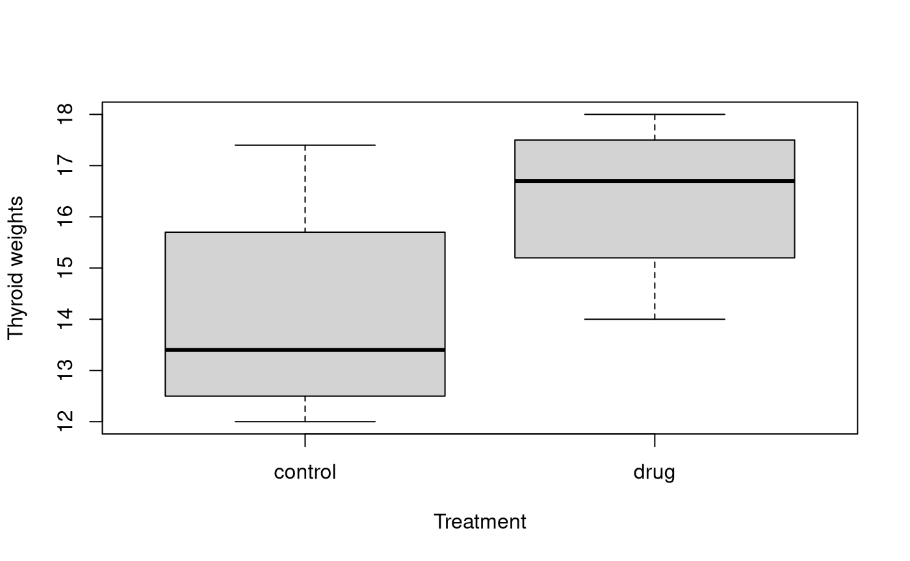
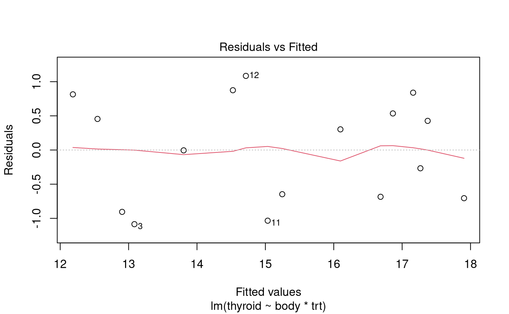
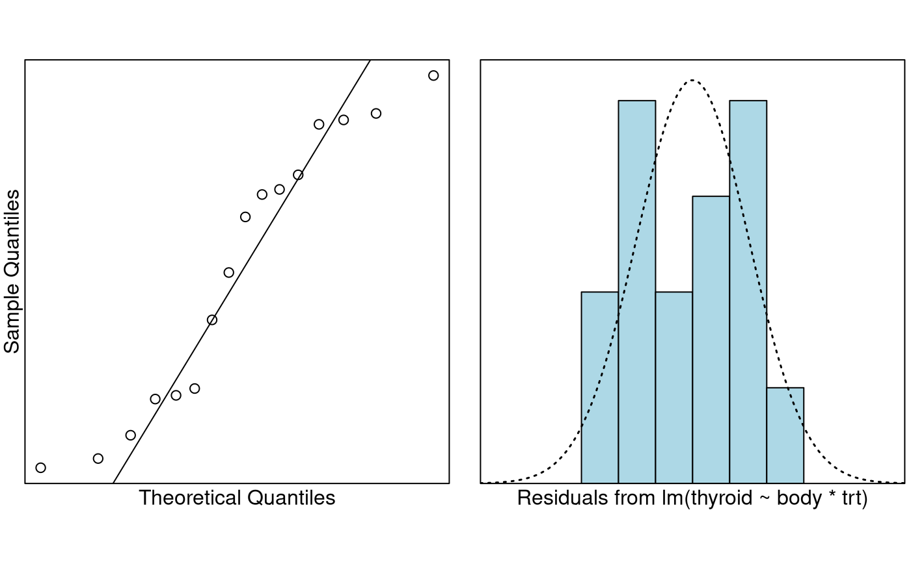
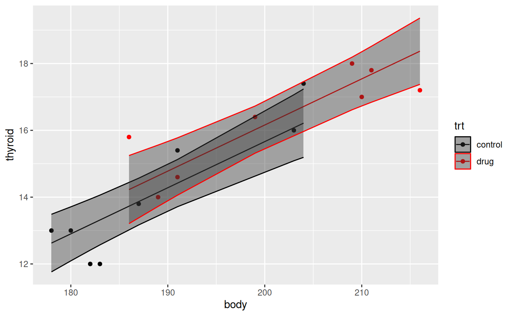
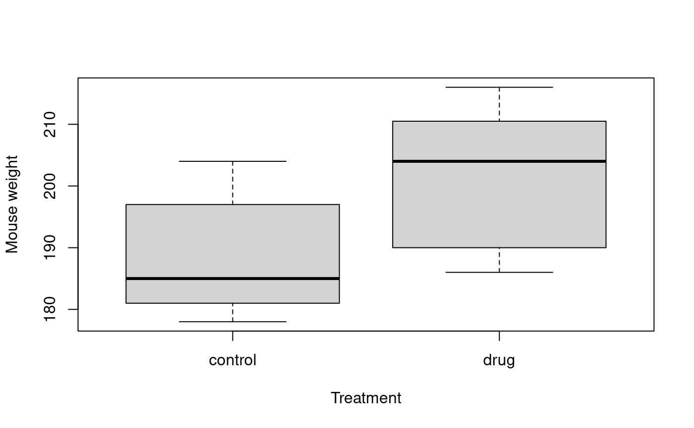

Problem
Hypothyroidism; (from hypo- meaning under or reduced, plus thyroid), often called under-active thyroid or low thyroid and sometimes hypothyreosis, is a common endocrine disorder in which the thyroid gland does not produce enough thyroid hormone. It can cause a number of symptoms, such as tiredness, poor ability to tolerate cold, and weight gain. In children, hypothyroidism leads to delays in growth and intellectual development, which is called cretinism in severe cases.
Drug companies attempt to develop drugs to help to grow the thyroid gland. Before these drugs are tested on humans they are tested on mice as they share a lot of physical characteristics of humans.
With the above in mind, an experiment was conducted to assess the effect of a newly developed drug that was intended to increase the weight of the thyroid gland (in mg).
Sixteen laboratory animals (mice) were randomly allocated into 2 groups:
- The control group (1) received water orally for 7 days.
- The drug group (2) received the new drug orally for 7 days.
The body weight of each mouse (g) was also recorded, since it was felt that it might explain variability in thyroid weight.
The variables of interest were:
-
thyroid: The weight of the mouse’s thyroid gland. -
body: The body weight of the mouse (g). -
group: A two-level factor with levels “1” and “2”
Question of Interest
To assess the effect of a newly developed drug that was intended to increase the weight of the thyroid gland (in mg).
Read in and Inspect the Data
thyroid.df = read.table("thyroid-1.txt", header = TRUE)
head(thyroid.df)
str(thyroid.df)## thyroid body group
## 1 16.0 203 1
## 2 13.0 180 1
## 3 12.0 183 1
## 4 15.4 191 1
## 5 17.4 204 1
## 6 13.0 178 1## 'data.frame': 16 obs. of 3 variables:
## $ thyroid: num 16 13 12 15.4 17.4 13 12 13.8 17 16.4 ...
## $ body : int 203 180 183 191 204 178 182 187 210 199 ...
## $ group : int 1 1 1 1 1 1 1 1 2 2 ...
# Create a factor variable for the drug vs control
thyroid.df$trt = with(thyroid.df, factor(ifelse(group == 1, "control", "drug")))
plot(thyroid ~ trt, data = thyroid.df, xlab = "Treatment", ylab = "Thyroid weights")
plot(thyroid ~ body, type = "n", data = thyroid.df)
text(thyroid.df$body, thyroid.df$thyroid, thyroid.df$group)In the first plot it looks like there is an effect due to the treatment. Should we worry about the innate differences between animals? That is, do we expect larger mice to have larger thyroids?
In the second plot it looks like we should indeed adjust for the differences in body weight. Let’s fit an interaction model.
Model Building and Check Assumptions

normcheck(thyroid.fit)
cooks20x(thyroid.fit)
cooks.distance(thyroid.fit)[12]## 12
## 0.3963979Model Building and Check Assumptions Continued…
summary(thyroid.fit)##
## Call:
## lm(formula = thyroid ~ body * trt, data = thyroid.df)
##
## Residuals:
## Min 1Q Median 3Q Max
## -1.0852 -0.6897 0.1487 0.6052 1.0848
##
## Coefficients:
## Estimate Std. Error t value Pr(>|t|)
## (Intercept) -19.84972 5.97937 -3.320 0.006114 **
## body 0.17997 0.03168 5.681 0.000102 ***
## trtdrug 14.78742 8.16681 1.811 0.095283 .
## body:trtdrug -0.07364 0.04201 -1.753 0.105068
## ---
## Signif. codes: 0 '***' 0.001 '**' 0.01 '*' 0.05 '.' 0.1 ' ' 1
##
## Residual standard error: 0.8465 on 12 degrees of freedom
## Multiple R-squared: 0.8637, Adjusted R-squared: 0.8296
## F-statistic: 25.34 on 3 and 12 DF, p-value: 1.77e-05##
## Call:
## lm(formula = thyroid ~ body + trt, data = thyroid.df)
##
## Residuals:
## Min 1Q Median 3Q Max
## -1.31554 -0.56603 0.01542 0.43274 1.57304
##
## Coefficients:
## Estimate Std. Error t value Pr(>|t|)
## (Intercept) -11.9538 4.2349 -2.823 0.0144 *
## body 0.1381 0.0224 6.164 3.41e-05 ***
## trtdrug 0.4972 0.5394 0.922 0.3734
## ---
## Signif. codes: 0 '***' 0.001 '**' 0.01 '*' 0.05 '.' 0.1 ' ' 1
##
## Residual standard error: 0.9116 on 13 degrees of freedom
## Multiple R-squared: 0.8287, Adjusted R-squared: 0.8024
## F-statistic: 31.46 on 2 and 13 DF, p-value: 1.044e-05Is trt really insignifcant?
b = coef(thyroid.fit2)
# Note this won't work unless you have ggplot2 installed
library(ggplot2)
thyroid.df = cbind(thyroid.df, predict(thyroid.fit2, interval = "confidence"))
ggplot(thyroid.df, aes(x = body, y = thyroid, color = trt)) +
geom_point() +
geom_line(aes(y = fit)) +
geom_ribbon(aes(ymin = lwr, ymax = upr), alpha = 0.4) +
scale_color_manual(values = c("#000000", "#FF0000"))
Model Building and Check Assumptions Continued…
##
## Call:
## lm(formula = thyroid ~ body, data = thyroid.df)
##
## Residuals:
## Min 1Q Median 3Q Max
## -1.43232 -0.42579 -0.00513 0.60886 1.92031
##
## Coefficients:
## Estimate Std. Error t value Pr(>|t|)
## (Intercept) -13.85763 3.67718 -3.769 0.00208 **
## body 0.14913 0.01883 7.921 1.54e-06 ***
## ---
## Signif. codes: 0 '***' 0.001 '**' 0.01 '*' 0.05 '.' 0.1 ' ' 1
##
## Residual standard error: 0.9066 on 14 degrees of freedom
## Multiple R-squared: 0.8176, Adjusted R-squared: 0.8045
## F-statistic: 62.74 on 1 and 14 DF, p-value: 1.538e-06Why was trt insignficant?
plot(body ~ trt, data = thyroid.df, main = "", xlab = "Treatment", ylab = "Mouse weight")
We can see that heavier mice have heavier thyroids, and the mice in the drug group are heavier.
Methods and Assumption Checks
The exploratory plots suggested to explain thyroid weight in mice, we first fitted the linear model with explanatory variables drug treatment and body weight, and their interaction. But, the interaction term was not significant (P-value = 0.11). The model was refitted with the interaction term removed. However, treatment was not signficant (P-value = 0.37), and was removed.
Mice were randomly allocated to groups and the measurements were done independently of each other. All other model assumptions were satisfied. (One potentially influential observation was investigated, however given its location and the stupidly small size of this data set (16 obs.) we will overlook it.)
Our final model is where .
Our model explains about 82% of the variability in the weight of thyroid glands.
Executive Summary
We wanted to assess the effect of a newly developed drug that was intended to increase the weight of the thyroid gland (in mg).
The only thing we can report is that larger mice have larger thyroids. We could report on the size of this effect, but won’t since it wasn’t part of the research question.
We have no evidence to believe that this drug increases the expected size of the thyroid gland in mice.
Addendum
From the initial boxplot it appeared that mice in the drug group had noticeably higher thyroid weight than those in the control group. However, it turned out that the drug group had bigger mice! The randomisation has, unfortunately, failed us here. Usually randomisation works out—but don’t assume it always does for smaller sample sizes like this.
In the future it may be best to put 2 mice into each of 8 weight classes and randomly allocate (via a coin toss) one of these two mice into the treatment group or not.
Bootstrapping
We can bootstrap to avoid the normality assumption. The vertical line is where the coeffcient is zero. If it’s towards the middle of the plot then that is evidence for the null—i.e. that there is no treatment effect.
set.seed(234)
library(bootstrap)
theta = function(rows, data = thyroid.df) {
fit = lm(thyroid ~ body + trt, data = data[rows, ])
coef(fit)
}
b = bootstrap(1:nrow(thyroid.df), 10000, theta)$thetastar
op = par(mfrow = c(2, 2))
on.exit(par(op), add = TRUE)
plot(density(b[1, ]), main = expression(beta[0])); abline(v = 0)
plot(density(b[2, ]), main = expression(beta[1])); abline(v = 0)
plot(density(b[3, ]), main = expression(beta[2])); abline(v = 0)